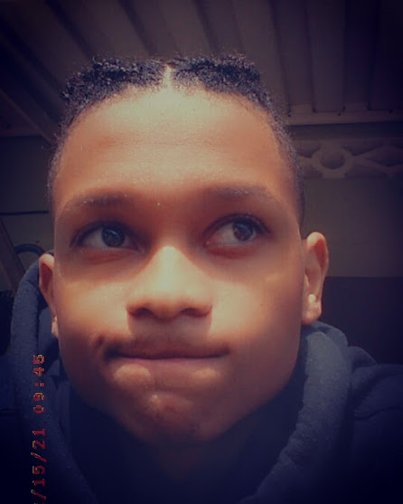

Aaron Hazzard
Strive for excellence
Software Engineer, Videographer, VideoEditor, Game Developer
Grown in a single-parent family of 3 women situated in Trinidad, Cocorite Port-of-Spain. Aaron Hazzard spent his entire life chasing his dream, his dream of becoming a software engineer. It all started from watching movies based on hacking and security where Aaron grasp the engagement of coding and problem-solving.
Aaron is a hardworking Software Engineering Student at the University of Trinidad and Tobago. He has a great passion for programming and problem solving, despite his past Mathematic failures, he still strives for the top of his game to be number 1.
He one day hopes to become either a full-time Game Developer at Unity or Nintendo and if that doesn't work out he hopes to become a full-time Software Engineer at Google. Aaron has recently been certified in Videography and has started making his own content on his pages which you find by clicking on one of the icons below.
If you need a video editor he is also here to assist you. He spends a good bit of time video editing as it is needed for the youth group he is currently in on(98.1FM radio station Tweens Group).